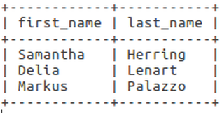

SELECT
The following examples are based on the table in this file.
The SELECT statment is used in sql to query a table and return zero
or more rows and columns from the specified table or tables based on
the given conditions. The simplest way to use the statment is with
the wild card statment, which returns the data contained in all rows
and all columns.
SELECT * FROM people;

The wild card can be replaced with column names in order to specify
the columns that should be returned.
SELECT first_name, last_name FROM people;
Additional conditions can be used by implementing the WHERE statment,
which filters rows based on the given condition. The column that is
SELECT first_name, last_name FROM people WHERE age=22;

Multiple conditions can be combined using the operators AND / OR.
SELECT first_name, last_name FROM people WHERE age=22 AND gender='f';
SELECT first_name, last_name FROM people WHERE age=22 OR last_name='Lenart';

Equals is not the only available comparison operator.
<: Less than
>: Greater than
<=: Less than or equal to
>=: Greater than or equal to
<>: Not equal
!= is also an operator for not equal to but it is not defined in
the ANSI 99 SQL standard and so some platforms may not support it.
Another comparison operator is the LIKE keyword. When used it returns
results that are similar to the condition given. It is commonly used
alongside wild card characters such as %(acts as any number of
characters) or _(acts as a single unknown character).
SELECT * FROM people WHERE first_name LIKE '%a';

SELECT * FROM people WHERE first_name LIKE 'M%';
SELECT * FROM people WHERE last_name LIKE '_leek';

SELECT * FROM people WHERE last_name LIKE 'Sho_man';
(Sources:
stackoverflow: What is difference between != and <> in sql server
ANSI/ISO/IEC International Standard(IS) Database Language SQL —
Part 2: Foundation (SQL/Foundation)
NOT NULL & DEFAULT
NOT NULL is used while creating a table to ensure a column can never
hold a null value. If this is used a value must always be given to
the specified column when insert is called. When DESC is used on a
table it is possible to see (in the third column) if a column can
hold a null value.
CREATE TABLE people(
first_name VARCHAR(50) NOT NULL,
last_name VARCHAR(50) NOT NULL
);
To ensure a NOT NULL column always has a value DEFAULT can also be
used during table creation. If a value is not given while inserting
data the provided default value will be used.
CREATE TABLE people(
first_name VARCHAR(50) NOT NULL,
last_name VARCHAR(50) NOT NULL DEFAULT 'Smith'
);
(Sources:
Head First SQL)
Data types
SQL data types
- CHAR(length) / CHARACTER(length): Accepts a fixed length character string. A value with a length less that the given parameter will have blank characters added onto it. Values must be surrounded by single or double quotes.
- VARCHAR(length): Accepts a variable length character string. Values must be surrounded by single or double quotes.
- Boolean: Holds a boolean value. When inserting data use TRUE or FALSE.
- INT / INTEGER: Takes a 4 byte / 32 bit whole number. As well as INT there is TINYINT(8 bit), SMALLINT(16 bit) and BIGINT(64 bit).
-
DEC(totalDigitCount, digitsAfterDecimal) /
DECIMAL(totalDigitCount, digitsAfterDecimal) /
NUMERIC(totalDigitCount, digitsAfterDecimal) : Accepts whole and non whole numbers. The number to the left of the decimal may have any number of digits, but it will be rounded to match th value of digitsAfterDecimal. The number to the right of the decimal must have a digit count equal to or less than totalDigitCount - digitsAfterDecimal.
DEC(5, 3)
12.345 pass
1.23 pass
1.2345 pass but rounded to 1.235
123.45 fail - REAL: Holds a single precision floating point number (32 bit approximation of a real number). All numbers containing 6 deciaml digits or fewer can be converted to a floating point value without loss of precision.
- DOUBLE: Holds a double precision floating point number (64 bit approximation of a real number). All numbers containing 15 deciaml digits or fewer can be converted to a floating point value without loss of precision.
- FLOAT(precision): Holds a floating point number with a user defined precision with a max of 64.
- BLOB(length) / BINARY LARGE OBJECT(length): Stored binary values up to a max size of 2GB.
- DATE: Accept date values surrounded by single quotes and in the format of DATE'YYYY-MM-DD' or 'YYYY-MM-DD'. Year can be values between 0-9999. Month can be values between 1-12. Day can be values between 1-31.
- TIME: Accept time values surrounded by single quotes and in the format of TIME'HH:MM:SS', 'HH:MM:SS', TIME'HH:MM:SS.NN' or 'HH:MM:SS.NN' (NN == nano seconds). Hour can be values between 0-23. Minute can be values between 0-59. Seconds can be values between 0-61.9999. TIME can accept DATE values but DATE must precede the value. The value input into the table will be 00:00:00.
- TIMESTAMP: Accepts both date and time values surrounded by single quotes and in the format of TIMESTAMP'YYYY-MM-DD HH:MM:SS', 'YYYY-MM-DD HH:MM:SS', TIMESTAMP'YYYY-MM-DD HH:MM:SS.NN' or 'YYYY-MM-DD HH:MM:SS.NN' (NN == nano seconds). Acceptable values can be found in the DATE and TIME sections.
(Sources:
Head First SQL
toronto.edu: SQL Data Types
stackoverflow: SQL Real vs Float
Ispirer SQLWays Database Migration Software
Wikipedia: Single-precision floating-point format
Wikipedia: Double-precision floating-point format
)
Basic SQL and the RDBMS
Access the SQL shell (assuming sql is installed):
mysql -u root -p
Create a new database:
CREATE DATABASE my_database;
Access the database:
USE my_database;
Create a new table in the database:
CREATE TABLE people(
first_name VARCHAR(50),
last_name VARCHAR(50),
age INT,
gender VARCHAR(1)
);
View table details:
DESC people;
Insert data into table:
In the first insert example not all column must be named, only
the ones to be used. In the second example as the column names are
omitted data must be provided for all columns in the correct order.
INSERT INTO people (first_name, last_name, age, gender)
VALUES('Samantha', 'Herring', 25, 'f');
View all data in table
SELECT * FROM people;
Delete table:
DROP TABLE people;
Delete database:
DROP DATABASE my_database;
(Sources:
Head First SQL)